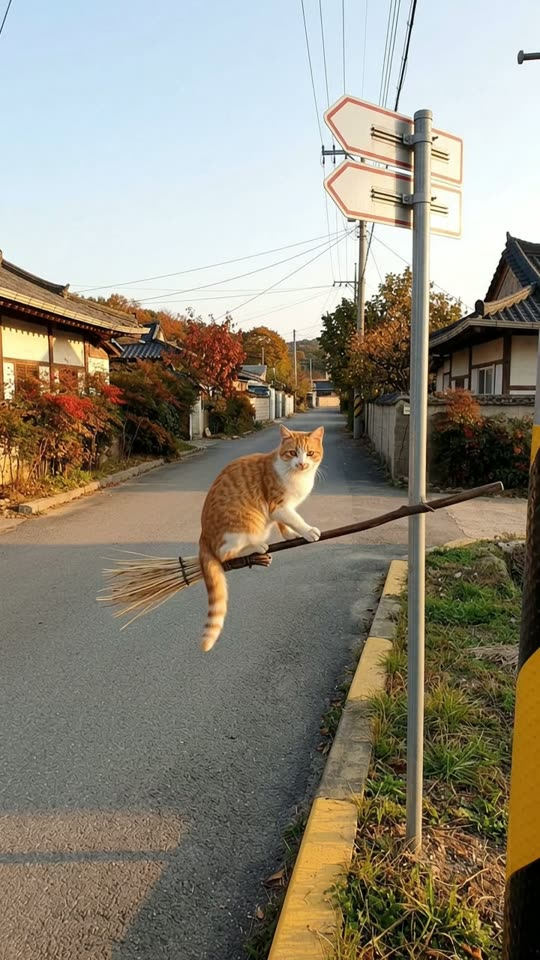
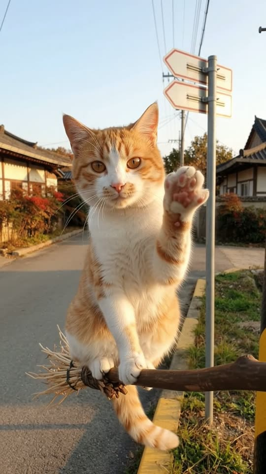
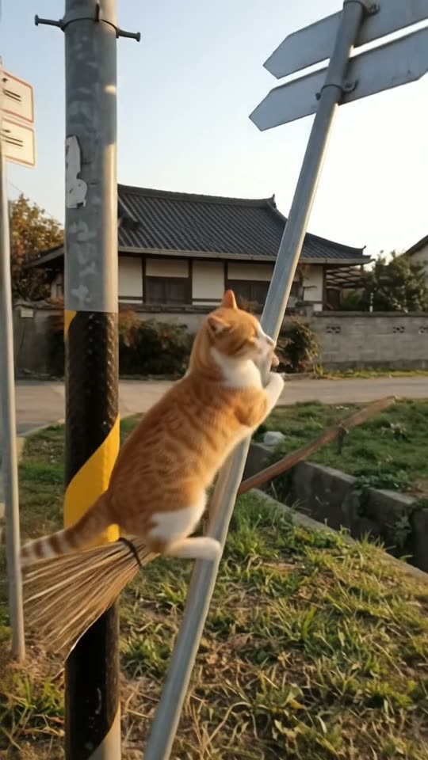
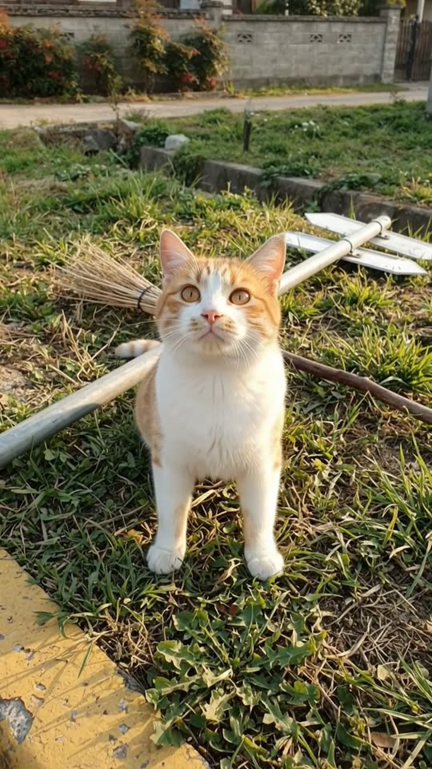

Free prompt pack
One broom.One post.
An orange-and-white cat flies a witch's broom down a village street at golden hour. It stops a foot from the lens and waves. Then it looks where it's going, a second too late. One still image and one prompt, in one take.
Both prompts, in the order I ran them. Wave back at the cat to reveal each prompt. Tap the street and it waves at you.
The first frame
The cat already close, the post already there. This image is frame one: a golden-hour view down a quiet village road, a real orange-and-white cat flying at us on a witch's broom three metres away, and the sign post standing at the right edge.
Watch out
Put the thing it crashes into in the first frame. The camera turns toward it later, and a turn toward something the image doesn't have is where the model invents a new shot.

The prompt 150 words
Real photo taken at chest height from the right edge of a quiet Korean residential road at golden hour, looking straight down it. Three metres away, a real orange-and-white cat flies toward us a metre above the asphalt, sitting upright side-saddle on a witch's broom and facing us: white chest, legs and muzzle, orange ears and back, a long ringed orange tail hanging down, amber eyes, soft fur and long whiskers, front paws on the handle. The broom lies crosswise, its dark wooden handle pointing right and a bundle of pale straw twigs on the left. At the right edge, a thin galvanized steel post stands in the grass verge behind a yellow-painted curb, two narrow plain white arrow-shaped signs with a red border at its top. Power lines, red and orange autumn trees, low houses, clear pale blue sky. Warm low sun from the left, long shadows, natural colour.
Hi, then bonk
Ten seconds, handheld from the curb. Add the image as the reference, set 10 s, 9:16, 720p and audio on, and paste the prompt whole.
- 0–1.8 sflies at the lens
- 1.8–3.6 sthe wave
- 3.6–4.4 sinto the post
- 4.4–10 sdown it goes
Watch out
Say why the post falls (loose in soft earth) and how (rigid, in one piece, one bounce). Without a cause the model bends it like rubber or leaves it standing.
Fragments



The prompt 1258 words
FORMAT Real handheld video filmed by someone standing at the edge of a road, seen as the finished exported video file: the full picture edge to edge, nothing on top of it. Whatever records the picture is never in frame. One continuous take in real time, from one single spot, no cuts. Vertical frame. The video runs at 24 fps. No frame is repeated. Real time, 1x speed, never slow motion. SCENE On a quiet residential road at golden hour, a real orange-and-white cat flies toward us sitting upright on a witch's broom, a metre above the asphalt. A metre in front of us it looks straight into the lens and raises one front paw in a peace sign. Still looking at us, it drifts to frame-right and flies chest-first into a street-sign post on the grass verge: the post tips over and falls flat on the grass, and the cat and the broom drop onto the grass beside it. The cat is already flying toward us in the first frame. The take ends with the cat lying dazed on the grass beside the fallen post, looking up at us. REFERENCE IMAGE Use it for the cat, the broom, the sign post, the road, the curbs, the trees, the houses and the light. Everything matches it exactly, zero drift, no smoothing. The movement is described below. THE CAT One real domestic cat, an orange-and-white bicolour: white chest, belly, legs and muzzle; orange ears, forehead and back; a long orange tail with darker rings; amber eyes; soft real fur and long white whiskers. It sits upright on its haunches in the middle of the broom handle, side-saddle, facing us, its hind legs and tail hanging below the handle and its front paws resting on the handle. It moves like a real cat: ears turning, whiskers twitching, slow blinks. The same cat in every frame; never a plush toy, never a cartoon, never CGI. THE BROOM A real witch's broom: a long dark brown wooden handle and a bundle of pale straw twigs bound with cord at the back. It flies crosswise to us, the twigs on frame-left and the tip of the handle pointing frame-right. One broom; it never glows, never sparkles, never changes. THE SIGN POST One tall thin galvanized steel post, about 3 m high, standing in the soft earth of the grass verge just behind the yellow-painted curb, 2.5 m ahead of us and 1 m to frame-right. At its top, two narrow white arrow-shaped signs with a thin red border; the sign faces are plain white, no letters. LOCATION MAP We stand still at the right edge of the road, at chest height, looking straight down it. The road runs away from us to a vanishing point in the middle of the frame, with yellow-painted curbs along both edges. The grass verge with the sign post is on frame-right; power lines, autumn trees and low houses behind. The cat flies down the middle of the road toward us. The spot where it hits is the post, 1 m above the grass. FIRST FRAME The cat on the broom at x 38-58%, y 40-56%, three metres away, facing us; the broom across x 25-72% at y 53%. The post at x 88-92% from y 12% to y 75%, its two signs at x 76-100%, y 3-26%. The road from the bottom of the frame to the vanishing point at x 45%, y 50%. Instant read: a cat riding a broom straight at us. No delayed reveal. CAMERA Handheld, standing still at chest height on one single spot: only the small natural sway of someone holding it. 0–3.6 s it holds on the cat. 3.6–4.4 s it turns 25 degrees right to follow the cat to the post. 4.4–6.0 s it tilts down 25 degrees, following the post to the grass, then holds on the cat and the fallen post until the end. It never cuts, never zooms, never walks, never moves to another spot, never goes to a wide shot, never shows the person filming. ACTION TIMING 0–1.8 s — The cat flies toward us down the middle of the road, a metre above the asphalt, sitting upright on the broom and growing larger, ears forward, eyes on the lens. 1.8–3.6 s — It slows and hangs in the air 1 m in front of the lens, its head and chest filling a third of the frame, looking straight into the lens; it lifts its right front paw beside its cheek, pads toward us, two toes spread apart in a V: a peace sign. It holds it. 3.6–4.4 s — Still looking at us with its paw up, it drifts handle-first to frame-right and flies chest-first into the post with a dull metal bonk; its cheek squashes against the steel and both front paws wrap around the post. 4.4–5.6 s — The post, loose in the soft earth, leans away from us and to frame-right, slowly at first, then faster, and falls flat on the grass with a heavy clang, the signs landing 3 m further on; the cat hangs on and goes down with it, the broom too. 5.6–8.0 s — The cat lies flat on its belly on the grass beside the fallen post, the broom lying behind it; it stays still, dazed, ears flattened. 8.0–10 s — It slowly lifts its head, blinks and looks up at us. Hold to the last frame. PHYSICS AND SCALE Real size: the cat is about 45 cm long without the tail, the broom about 1.3 m, the post about 3 m. The broom flies at walking speed, never faster, and bobs slightly under the cat's weight. The collision is real: the post shakes and the cat's body stops dead. The post falls like a real steel post, rigid and straight, accelerating under gravity, and bounces once on the grass; it never bends, never breaks. The broom ends on the grass and stays there. One cat, one broom, one post. Nothing morphs. NO FULL-FRAME EVENTS Nothing fills the frame: even at its closest, the cat leaves the road and the sky visible around it. The picture never goes white, black or blurred from edge to edge. LIGHTING Golden hour: warm low sun from frame-left, lighting the cat's face and chest and the left side of the post; long soft shadows across the road and the grass toward frame-right; a clear pale blue sky. The white fur stays bright with detail. AUDIO No music, no score, no narration, no subtitles. Quiet street sounds: distant birds, a faint breeze, a soft whoosh of the broom as it comes close, a short chirp from the cat at the peace sign, a dull metal bonk at 3.9 s, the creak of the post leaning, a loud metal clang as it hits the grass at 5.4 s, then quiet. Nobody speaks. No words. LOOK Real handheld footage, seen as the finished exported file: crisp detail, natural warm colour, light compression, no colour grade, no film grain, no lens flare, no slow motion, never CGI, never a cartoon. No camera app interface: no shutter button, no gallery thumbnail, no record button, no icons, no timer, no recording dot, no frame lines. POSITIVE LOCKS One cat, one broom, one sign post. No people, no cars moving on the road. The signs have no letters. No captions, no subtitles, no on-screen text, no watermark, no logos, nothing on top of the picture. ONE CAT. ONE BROOM. NO CUTS. NO ZOOM. NO SLOW MOTION. NO MUSIC.
Rule 01
Start close
A dot that grows for four seconds is dead time, and a dot can't hold a face. Start with the animal big enough to read.
Rule 02
The obstacle goes in the image
Anything the camera turns toward has to be in frame one. New things after a turn are where hidden cuts and duplicates come from.
Rule 03
Give the crash a cause
A post doesn't fall because a cat touches it. It falls because it was loose in soft earth. Write the cause and the model stops arguing.
That's the whole build
Now go crashsomething small.
If yours works, send it over. I read every DM and the good ones end up on the account.
@martiiifons